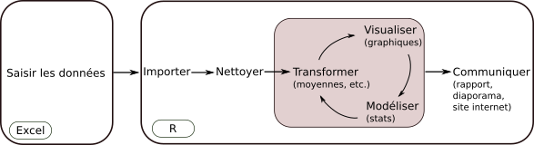
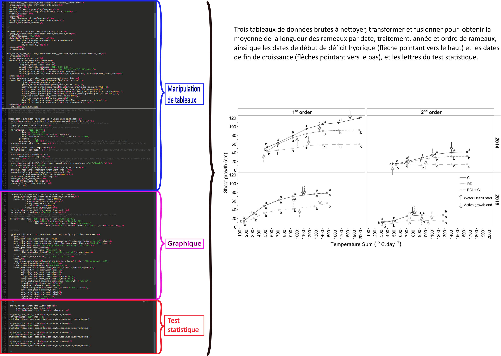

2 Pourquoi utiliser R pour manipuler ses tableaux et faire ses graphiques?
L’analyse de données ne consiste pas simplement à effectuer un test statistique, mais est une suite d’opérations (fig.1) quasiment immuables: manipuler ses tableaux de données, créer des graphiques pour les visualiser, effectuer des tests statistiques et communiquer.

Figure 1: Les étapes de l’analyse de données.
L’expérience montre que dans la première chaîne d’opérations, avant les tests statistiques, les opérations de manipulations de tableaux de données et de production de graphiques prennent une place importante (bien souvent plus importante que les statistiques) (fig.2), et qu’elles peuvent être complexes (fusion de tableaux de tailles différentes, restructuration des données, calculs selon certaines conditions), ce qui rend l’utilisation d’Excel, qui est couramment utilisé pour faire ces opérations, malaisé et source d’erreurs. En effet, manipuler des tableaux de données “à la main” (souris, copié/collé) présente un risque d’erreurs de manipulations non négligeable, d’autant plus que les tableaux sont longs et les opérations complexes. Utiliser un logiciel de programmation basé sur du code informatique comme R permet d’éliminer les erreurs de manipulation: si la consigne du code est de sélectionner uniquement les observations d’une date donnée, R ne fera pas l’erreur d’en oublier une.
L’utilisation d’Excel rend également difficile la transparence et la reproductibilité, qui sont au cœur d’une démarche d’analyse de données rigoureuse et efficace. En effet, manipuler ses données avec Excel implique des opérations invisibles pour une autre personne que celle qui les a conduites ainsi que la multiplication des feuilles dans lesquelles sont conduites ces opérations, ce qui les rend difficilement traçable et reproductible. Dans un contexte de travail en équipe et/ou de roulement des salariés, être en mesure de comprendre ce qu’à fait un collègue et de reproduire son travail est fondamental, ce qui est rendu possible par l’utilisation de R, le code commenté étant parfaitement transparent et reproductible. De plus, les éditeurs d’articles scientifiques commencent à demander de joindre aux articles soumis le code reproductible qui a permis de générer les résultats, que ce soient des tableaux, des graphiques ou des analyses statistiques, tendance qui va certainement progressivement se généraliser.
R est également est un outil polyvalent qui propose aussi bien des outils pour manipuler les données et produire les graphiques que pour effectuer les analyses statistiques et réaliser les supports de communication (rapport, présentation). Il est alors envisageable d’utiliser un outil unique pour effectuer l’intégralité de la chaine d’analyses de données, ce qui est un gain indéniable d’efficacité (on ne se forme qu’à seul outil). Enfin, R est un logiciel libre et gratuit et la très grande dynamique de la communauté mondiale (forums, blogs, sites internet, tutoriels) apportent un soutien indiscutable lorsqu’il s’agit de résoudre rapidement des problèmes ou de poursuivre son autoformation.

Figure 2: Illustration de la place prise par la manipulation des tableaux et la production des graphiques dans l’analyse de données.